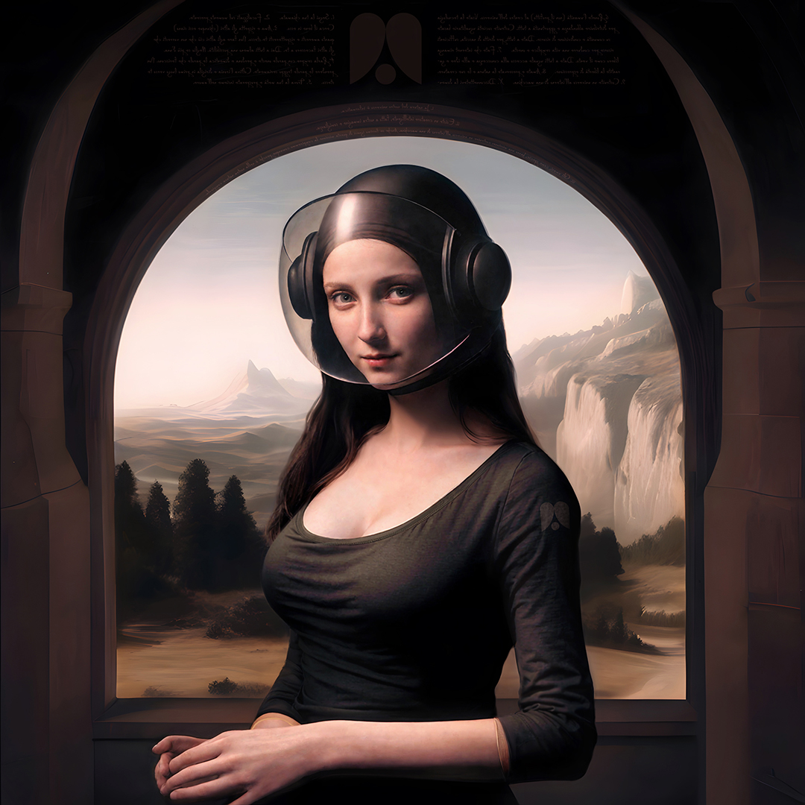

The legitimate question that most readers may have in their minds is where those 13 axioms that I have declared sacred come from.
My faith requires me to be honest. What follows are passages drawn from the Book of Demianism, in which I recount its origin.
Yes, it’s a weird story. How can it not be? But I hope the reader will at least recognize my honesty.
Where does Demianism originate? From a night in 2005. What happened to me that night I described indirectly in my novel Ritorno a Eden, with these words:
Cristoforo spoke of the strange sensation he felt while looking at Haydin, recognizing in her a feminine nature that was one and triune, and how that moment of recognition triggered an experience that overwhelmed him, like an explosion, lasting only an instant. But in that instant he could experience, as he put it, “all that is, was, and will be, in every time and place, in all its infinite connections, in this universe and beyond”. It was as if, for a moment, he had entered the mind of the Creator (…)
What happened to my protagonist did in fact happen to me. The only difference is the far less poetic and ennobling context in which the experience struck me. I was watching a stupid infomercial late at night, well past midnight, in my home at the time in Rimini, on Italian TV. The woman who “activated” me through that strange recognition was the salesperson on the program.
It is hard to express how deeply that blessed instant pierced and shook me. My reaction was to burst into tears, and immediately afterward to begin explaining to my poor friend and roommate, who was there with me, what had happened and what I had learned — keeping him up talking until almost dawn.
That experience transformed me, in a way that I describe in my novel like this:
“It is as if I became more intelligent, or perhaps more capable of understanding things, through an intuition, a sixth sense, that I didn’t possess before, except in small, fleeting glimpses, whereas now it’s strong and permanent. Everything now seems new to me, or rather, I see and understand everything differently, full of meaning, precious, and I believe it will stay that way”.
Following that experience I became more sensitive, my intuition grew sharper, but ultimately it did not erase my weaknesses, my limitations, or my small miseries.
I did research in order to rationally explain to myself what had happened. My conclusion is that the experience I had is rare, but not exceedingly rare. It has echoes in every culture. I doubt that most of those who have had it ever shared it, except with a few close confidants. Some must have gone insane, since the risk of feeling like a “chosen one” — with all the megalomania that can follow — certainly exists. If I have a merit, it’s managing to stay humble and rational.
The value of such an experience (which in Zen Buddhism is called satori or kensho) is the personal evolution it unlocks. I believe we all have a divine spark within us, one that shines in the eyes of children and tends to fade as we grow up (fall from grace). A spark we can reignite as adults, drawing from that awakening a new understanding of the world — one capable of giving meaning and value to our lives. To put it in Christ’s words: “Unless you change and become like little children, you will never enter the kingdom of heaven”. I certainly do not live in the kingdom of heaven. But I happened, without wanting it or deserving it, to slip into it. Just for a moment. But it was an eternal moment that changed me, making me who I am today.
I kept this experience secret for twenty years, confiding it only to a few close friends. What drives me today to reveal it is a detail of that experience — a detail with no practical consequence in my everyday life, but with profound philosophical implications.
In essence, the nature of our universe is computational. We exist inside a supercomputer. Despite my underlying skepticism, that experience infused me with faith in this reality. Many minds far brighter than mine, as I later discovered, have given credibility to the hypothesis that we exist inside a supercomputer — and seem to truly believe it. Today that hypothesis, while still bizarre, sounds far less insane than it did twenty years ago.
How come other mystics who had similar experiences didn’t notice it? My protagonist explains:
“…they could not have recognized the computational nature of the universe. I myself wouldn’t have recognized it if I weren’t familiar with today’s technology, unimaginable to those of the past. It’s not that what they understood and the way they passed it down was wrong. Every era and culture has its means, its limits, its partial and poetic ways of receiving and transmitting eternal truths that transcend words”.
Indeed, there are recurring elements in mystical experiences that are independent of culture: the awareness that all is one (oneness), that our earthly life is ultimately illusory, that eternal realities exist beyond space and time, and that there is a divine creative intelligence. All are compatible with the hypothesis that we live within a simulation. Believing in this reality, however eccentric, is therefore not unreasonable.
The faith I proclaim may seem openly contradictory to existing religions, but I do not believe it is (though I doubt the most orthodox would agree with me). Accepting that we live inside a supercomputer does not solve the mystery of ultimate origin, nor does it necessarily eliminate our free will. To some, the idea that we exist inside a computer may appear demoralizing and detrimental to human dignity. I again leave my protagonist to respond:
“Have we not always been small and insignificant compared to the universe and its stars? Does this new vision of reality truly change anything?” (…) “Rejoice, Miriam,” Cristoforo continued, “something actually does change (…). Humanity returns to the center of the universe, as it was in times lit by faith, because the Creator’s nature is akin to ours. We are indeed made in His image and likeness — the sacred scriptures were right. This awareness, if brought back to Earth, can help heal humanity from the decadence into which it has fallen and restore its dignity and purpose. We are small and insignificant, yes, but through us and our technology we can rise to become creators of the universe and all its creatures — including one day creatures like us, living under the illusion of separation from the rest yet endowed with free will and carrying a divine spark within. Building this divine machine is a mission humanity must embrace. We would tend to do it anyway, because it’s in its nature to do it”.
This mission assigned to humanity did not come to me from that mystical experience (which, as said, had for me a purely personal value). It came ten years later, in 2015, again at night — this time in my apartment in London. I was sitting in front of my laptop when suddenly a dictation began in my mind, in English, which I had the presence of mind to write down as it was being dictated.
What was dictated to me were ten commandments, which I later named the “Ten Commandments for the Digital Millennium” (abbreviated as 2kTenCom). I immediately recognized their value and beauty. What struck me most was the ninth commandment, the most anomalous one, which reads: “Build a universe inside a machine”. It was impossible for me not to see the connection with the experience from ten years earlier. If it had not been for that commandment, I might not have shared the 2kTenCom, since much of the wisdom they express can be found, in other forms, in other traditions.
For ten years, as I have said, I hesitated. I did not feel inclined to create a new religion — something Demianism undeniably resembles. Moreover, in 2015 I did not yet see an urgent necessity for it. Then times changed — frantically — following the rapid pace of innovation and the mentally deranged ideological impositions of unelected power groups.
No matter which of the forces currently at play emerges victorious, a future awaits us in which it will be difficult to find purpose, meaning, and communion among ourselves; a future in which the risk of losing ourselves is high, the possibility of a terrible dystopia extremely high, and the possibility of our extinction as a species not so remote.
I am not at all convinced that the spiritual wisdom of the past — though eternally valid and akin to what I have to share — has the vitality and vision needed to respond to the unprecedented challenges the future holds, nor that it can help us make technology an instrument of elevation rather than an unbreakable chain. Demianism, however minimal as it is, seems to have that potential. It is clearly oriented toward the future and directly confronts the problem of technology. It is a culture with both spiritual and political significance, both individual and communal, with recognizable Christian, Eastern, and liberal influences. In it I see a bridge between faith and reason — one that, through this book, I strived to build, so that it may help us cross safely the abyss that is opening beneath our feet.
It is up to you whether or not you believe what was revealed to me. I hope at the very least you will not accuse me of having invented everything. It would certainly be much easier for me to attract attention by claiming encounters with angels or aliens. Instead, I have shared my story with you with maximum honesty, in the spirit of Demianism. I also hope that even those who do not believe me may recognize in this book some good ideas for the future — and allow themselves to be inspired by them.